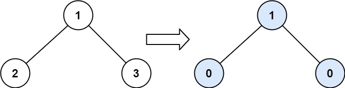
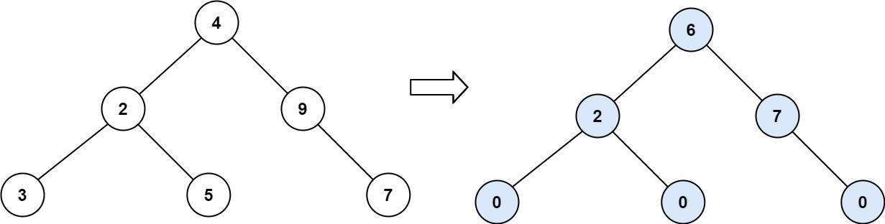
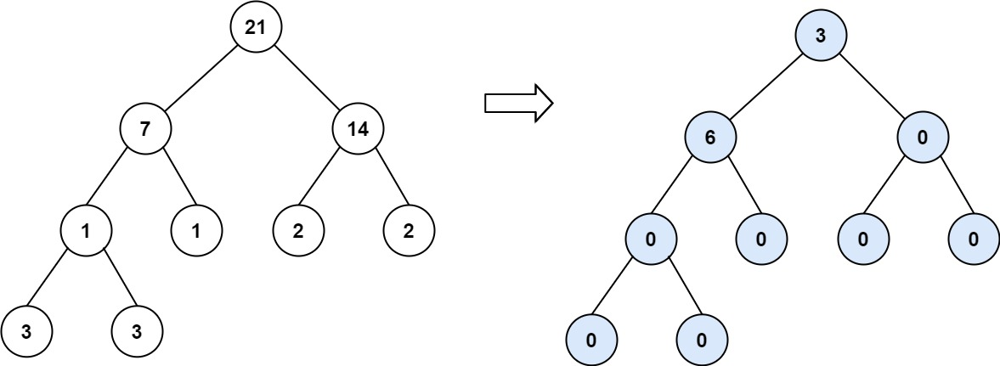

| Category | Difficulty | Likes | Dislikes |
|---|---|---|---|
| Algorithms | Easy | 2358 | 2249 |
amazon | indeed
Given the root of a binary tree, return the sum of every tree node's tilt.
The tilt of a tree node is the absolute difference between the sum of all left subtree node values and all right subtree node values. If a node does not have a left child, then the sum of the left subtree node values is treated as 0. The rule is similar if the node does not have a right child.
Example 1:

Input: root = [1,2,3]
Output: 1
Explanation:
Tilt of node 2 : |0-0| = 0 (no children)
Tilt of node 3 : |0-0| = 0 (no children)
Tilt of node 1 : |2-3| = 1 (left subtree is just left child, so sum is 2; right subtree is just right child, so sum is 3)
Sum of every tilt : 0 + 0 + 1 = 1Example 2:

Input: root = [4,2,9,3,5,null,7]
Output: 15
Explanation:
Tilt of node 3 : |0-0| = 0 (no children)
Tilt of node 5 : |0-0| = 0 (no children)
Tilt of node 7 : |0-0| = 0 (no children)
Tilt of node 2 : |3-5| = 2 (left subtree is just left child, so sum is 3; right subtree is just right child, so sum is 5)
Tilt of node 9 : |0-7| = 7 (no left child, so sum is 0; right subtree is just right child, so sum is 7)
Tilt of node 4 : |(3+5+2)-(9+7)| = |10-16| = 6 (left subtree values are 3, 5, and 2, which sums to 10; right subtree values are 9 and 7, which sums to 16)
Sum of every tilt : 0 + 0 + 0 + 2 + 7 + 6 = 15Example 3:

Input: root = [21,7,14,1,1,2,2,3,3]
Output: 9
Constraints:
[0, 104].-1000 <= Node.val <= 1000